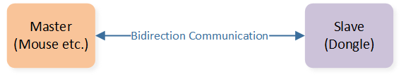
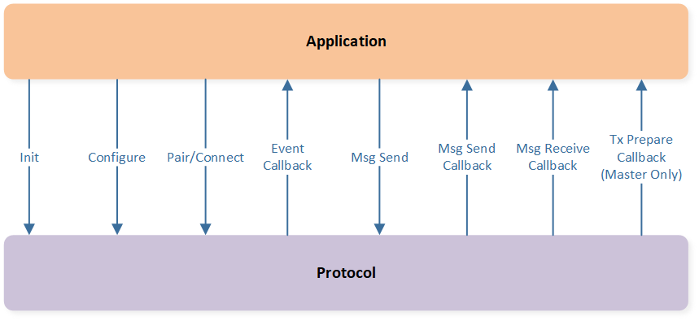

HID Proprietary Protocol User Guide
This article introduces how to use the HID Proprietary Protocol, including the framework, process and function description etc.
Terminology and Concepts
This protocol is Realtek's private wireless protocol for point-to-point communication. The communication roles are shown in Figure Communication Role. This article introduces how to use this protocol. For details on this protocol, please refer to the document HID Proprietary Protocol Specification.
{kind=link}

Communication Role
The protocol is divided into 5 states, and the state machine is shown in Figure Protocol State Machine.
The initial state is the unpaired state, that is, there is no bond information and no link.
The paired unconnected state has bond information but no link. In the paired unconnected state, if the bond information is ignored, it will enter the unpaired state and can be paired again, that is, re-pairing. After successful re-pairing, the original bond information will be overwritten. Once re-pairing fails, the application can reuse the original bond information (in Figure, the bond information abbreviation as BI) to restore the unpaired state to the paired unconnected state.
In the pairing state and the paired connecting state, the behavior of the master and slave is slightly different. The master side has a timeout mechanism, that is, it will automatically exit if it times out. There is no timeout mechanism on the slave side. If the slave side needs to exit this state, the application should stop the state machine manually.
In the paired connected state, the master and slave perform bidirectional data communication. Bidirectional data communication performs periodic communication based on the sync interval. When there is no data exchange between the two parties, the communication speed can be reduced, that is, entering the heartbeat state, and communicating periodically with the heartbeat interval to reduce power consumption.

Protocol State Machine
Feature Set
Features of this protocol:
Support 4K ultra-high reporting rate
Support multiple retransmission mechanisms to meet the reliability requirements of different services
Use frequency hopping technology to improve anti-interference ability
Support pairing for fast binding
Support automatic switching to low power mode when idle
The operations involving the protocol mainly include initialization, parameter configuration, pairing, connection, data sending and receiving, and their callbacks, as shown in Figure Protocol Interface. The subsequent chapters of this article describe how to use these operations.
{kind=link}

Protocol Interface
Provided APIs
The interface provided by the protocol is declared in the following files:
subsys\ppt\sync\inc\ppt_sync.hsubsys\ppt\sync\inc\ppt_sync_master.hsubsys\ppt\sync\inc\ppt_sync_slave.h
Initialization and Configurations
MP Tool Configuration
The BLE master link needs to be configured. For details, please refer to MP Tool Configuration.
Initialization
The protocol running process is shown in Figure Run Flow. The initialization process needs to be performed first, then state machine operations and data communication such as pair and connect can be performed.
All API of this protocol start with the prefix sync_.

Run Flow
The specific process of initialization is as follows:
Call
sync_init()to initialize the protocol and confirm the device role.Configure parameters.
Configure callbacks.
Call
sync_enable()to enable the protocol.
Parameters and callbacks are introduced in subsequent chapters.
Functions
This section mainly introduces how to use and configure the different functions or modules of the HID proprietary protocol.
Parameters
This section mainly explains the meaning of parameters in the protocol and how to configure them.
Channels
The channels used by the protocol have default values 2432, 2447, 2462, 2477, 2407, 2422, 2437, 2452, 2442, 2457, 2472, and 2413 MHz, a total of 12 channels. Channel grouping is used for fast reconnection in the fast sync stage. By default, it is divided into 3 groups, and each group has 4 channels.
If users have customized needs, they can call API sync_channel_set().
Tx Power
If dynamic power control is used, the transmit power will vary within the range of tx_power_dbm_min and tx_power_dbm_max.
When the link quality is good, the transmit power is reduced; otherwise, the transmit power is increased.
If dynamic power control is not used, the transmit power is fixed to tx_power_dbm_max.
For transmit power configuration, you can call API sync_tx_power_set().
Pairing RSSI Threshold
The protocol supports using RSSI threshold to limit the pairing distance when pairing. Pairing is only allowed if the signal strength is greater than the threshold.
Using the API sync_pair_rssi_set() to set the RSSI threshold.
Bond Information
Bond information will be generated during pairing and automatically stored in the FTL space. When connecting, the application needs to retrieve the bond information to connect. The application can also delete itself or overwrite the bond information.
sync_nvm_get_bond_info() to attain the bond information.sync_nvm_set_bond_info() to set the bond information.sync_nvm_clear_bond_info() to clear the bond information.Synchronous Parameters
The master device can configure the synchronization interval to correspond to the reporting rate of application data. When the synchronization interval is greater than the transmission speed supported by the protocol, the master device can configure the retransmission interval to allow the protocol to retransmit at the retransmission interval speed within a synchronization interval.
Using the API sync_time_set() to set the synchronization interval and retransmission interval.
For example:
sync interval is 1000 us, and retransmit interval is 1000 us, corresponding to the 1K reporting rate, with no retransmission opportunities.
sync_time_set(SYNC_TIME_PARAM_CONNECT_INTERVAL, 1000); sync_time_set(SYNC_TIME_PARAM_CONNECT_INTERVAL_HIGH, 1000);
sync interval is 1000 us, and retransmit interval is 250 us, corresponding to the 1K reporting rate, with 3 times retransmission opportunities.
sync_time_set(SYNC_TIME_PARAM_CONNECT_INTERVAL, 1000); sync_time_set(SYNC_TIME_PARAM_CONNECT_INTERVAL_HIGH, 250);
sync interval is 250 us, and retransmit interval is 250 us, corresponding to the 4K reporting rate, with no retransmission opportunities.
sync_time_set(SYNC_TIME_PARAM_CONNECT_INTERVAL, 250); sync_time_set(SYNC_TIME_PARAM_CONNECT_INTERVAL_HIGH, 250);
Heartbeat Parameters
There are three levels of heartbeat: 0/1/2. Each level has a heartbeat interval and number. The higher the level, the larger the heartbeat interval, corresponding to a lower power consumption state. The 0th level is the synchronization interval used and does not require additional heartbeat interval settings. The 2nd level does not require additional heartbeat count settings.
Using the API sync_master_set_hb_param() to set the heartbeat parameters.
For example, turn off the heartbeat.
sync_master_set_hb_param(0, 0, SYNC_MASTER_HB_RHY_PERIOD_MAX);
For example, turn on the heartbeat, and the level 0 is 40 times, the level 1 is 10 ms with beat time by 200 times, and level 2 is 100 ms.
sync_master_set_hb_param(0, 0, 40);
sync_master_set_hb_param(1, 10000, 200);
sync_master_set_hb_param(2, 100000, 0);
Retransmit & Buffer
According to the number of retransmissions, messages are divided into the following four categories:
Zero retransmission: The message is only sent once, regardless of whether it is responded to or not.
Limited retransmission: If the message is not responded to, it will be retransmitted. If there is no response after retransmitting a certain number of times, the retransmission will be canceled.
Infinite retransmission: If the message is not answered, it will be retransmitted until it is answered.
Dynamic retransmission: If a message is not answered and needs to be retransmitted, if there are other messages to be sent, the retransmission will be canceled. If no other messages are sent, the retransmission will continue.
Using the API sync_msg_set_finite_retrans() to configure the finite retransmit number.
Each message type has an independent buffer pool, and the number of buffered messages can be configured together using sync_msg_set_quota() or separately by message type using sync_msg_set_quota_by_type().
Log On Off
When the protocol is running, the application can open or close part of the log. It is open by default.
Using the API sync_log_set() to turn on-off the log.
Callback
There are four types of callbacks for protocol notification applications:
event callback: notify pairing and connection status.
message send result callback: notify message send result.
message receive callback: notification message reception.
send prepare callback: master notifies the message to send preparation, which is used to trigger the application to collect and send data.
Event Callback
The registration function of event callback is sync_event_cb_reg().
The function pointer type is sync_event_cb_t.
The event type details are shown as follows:
Event Type |
Condition |
Callback Timing |
Description |
|---|---|---|---|
SYNC_EVENT_PAIRED |
pair |
pair success |
inform pair success |
SYNC_EVENT_PAIR_TIMEOUT |
pair |
pair timeout |
master inform pair timeout |
SYNC_EVENT_CONNECTED |
pair or connect |
pair success connect success |
inform connect success |
SYNC_EVENT_CONNECT_TIMEOUT |
connect |
connect timeout |
master inform connect timeout |
SYNC_EVENT_CONNECT_LOST |
link |
link timeout |
inform link disconnected |
Message Send Result Callback
The message send result callback is an independent callback for each message, which is registered when the message is sent using sync_msg_send().
The function pointer type for sending the result callback is sync_msg_send_cb_t.
Message Receive Callback
The registration function of a message receive callback is sync_msg_reg_receive_cb().
The function pointer type is sync_msg_receive_cb_t.
Message Send Prepare Callback
Message send prepare callback is triggered before master tx and can be used to allow the application to collect and send data according to the rhythm of protocol tx.
Its registration function is sync_master_reg_tx_prepare_cb().
State Machine Operation
The operation types of state machines are:
pair: start pairing
connect: start connecting
stop: stop pairing, connecting, or disconnect the link
sync_pair() to trigger the pair operation.sync_connect() to trigger the connect operation.sync_stop() to trigger the stop operation.Message Sending and Receiving
Message sending is the same as in Section Message Send Result Callback.
Message reception is the same as in Section Message Receive Callback.
DLPS
If the application wants to support DLPS, the protocol's DLPS initialization API sync_dlps_init() should be called after sync_init(), and should be called
before platform DLPS init (DLPS_IORegUserDlpsEnterCb(), DLPS_IORegUserDlpsExitCb(), DLPS_IORegister() and other APIs).
Troubleshooting
This section introduces some common issues and precautions.
Resources Occupied
The operation of the protocol will occupy some resources, and the application needs to avoid these occupied resources.
Resources occupied:
ENHANCE TIMER
When DLPS is supported, the macro
USE_ENHTIM_DLPSneeds to be turned on inboard.h.The ENHANCE TIMER API is not interrupt safe. If the application also uses ENHANCE TIMER, it needs to call
__disable_irqand__enable_irqfor protection. For example:__disable_irq(); ENHTIM_Cmd(ENH_TIM2, ENABLE); __enable_irq();
The details are as follows:
Timer Occupied |
<=4K |
8K |
|---|---|---|
Master (Mouseetc.) |
ENH_TIM1 |
ENH_TIM0 / ENH_TIM1 |
Slave (Dongle) |
ENH_TIM1 |
ENH_TIM0 / ENH_TIM1 / ENH_TIM2 |
FTL space: offset 0, length 8 Bytes.
Interrupt Priority
In order to avoid interfering with the operation of the protocol, the interrupt priority of the peripherals used by the application should be ≥ 3, and please try to reduce the execution time of the critical section as much as possible.
Sample Projects
This protocol provides examples for user reference, see Sync Example for details.
See Also
Please refer to the relevant API Reference: